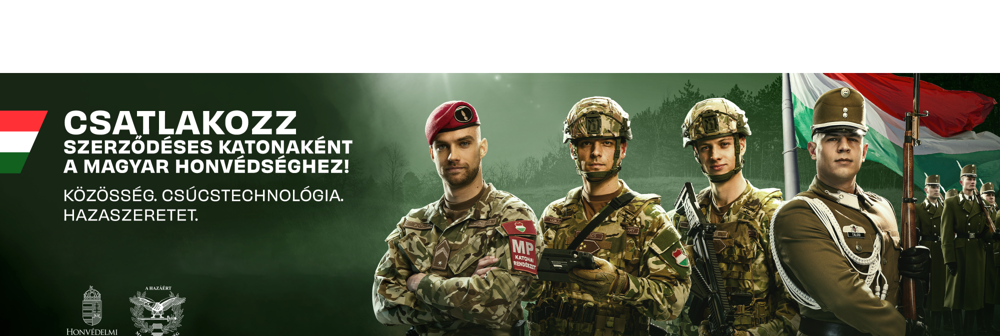

"Hazáért mindhalálig"
A Magyar Honvédség az ország függetlenségének, területi integritásának és állampolgárainak védelmére hivatott fegyveres erő. Büszkék vagyunk történelmünkre, hagyományainkra és katonáink elkötelezettségére.
Katonáink feladata a hazai és nemzetközi béke, biztonság és stabilitás fenntartása. Számos NATO és EU misszióban veszünk részt, képzett és felkészült szakemberekkel.
Szeretnél hazád szolgálatába állni? Legyél része egy összetartó, fegyelmezett és elkötelezett közösségnek. Várunk katonai és civil pozíciókba is!
Ismerd meg közelebbről a Magyar Honvédség feladatait, küldetését és mindennapjait!
Cím: 5135 San Fierro Main St.
Telefon: +36 30 566 2445